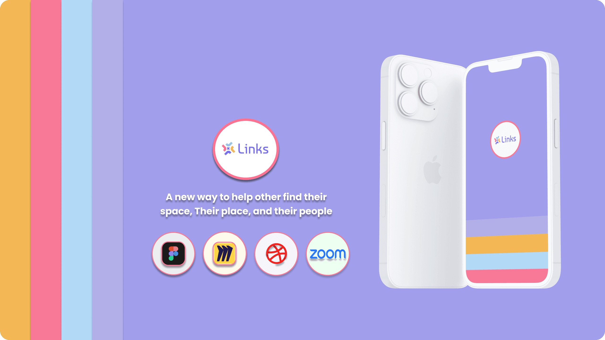

I was brought into a project that had already failed once. The previous designer had left the client with a product that didn't reflect their vision and wasted months. My job: rebuild from scratch, earn back client confidence, and hit a hard iOS App Store launch deadline, all simultaneously. I did all three. This case study is about what it looks like to do UX well under real operational pressure.
December 2021. Joinlinks LLC was building Links, a social platform for intimate, interest-based community events in large cities. They had already been through one designer. That engagement had ended badly: deliverables that missed the brief, a product that didn't reflect the brand, and a client who had lost confidence in the design process entirely.
They came to me with three overlapping pressures already in motion:
"Most design processes assume stable ground. This project had none of it, and that made it one of the most valuable experiences of my career."
Post-pandemic social behavior had fundamentally changed. People in large cities, especially people new to a city, were struggling to form real connections. Traditional social platforms had gotten worse at this, not better: too large, too noisy, algorithmically optimized for engagement rather than genuine human connection.
The research the client had collected validated a clear user need: people wanted to meet others through doing things, not through profile browsing. Events as the primary social object, rather than profiles or feeds, was the core insight the product was built on.
My research confirmed the positioning and added nuance: users wanted to see who would be at an event before committing. Personalization, knowing the people attending would share your interests, was as important as proximity. This finding directly shaped two major design decisions.
The first two weeks were entirely about alignment, with the research, with the client's vision, and with the engineering constraints. I established weekly check-ins with the client and made design rationale a standard part of every deliverable. They didn't just receive screens, they received the thinking behind the screens. That transparency was what rebuilt the trust.
Every design iteration was documented. When I changed something, I explained why. When the client pushed back, I treated it as signal rather than noise, sometimes they were right, sometimes the explanation of the rationale brought them around. Either way, it was a collaborative process, not a service transaction.
Unlike Facebook Events (which required a Facebook presence), Meetup (which felt corporate and dated), or Instagram (which was built for broadcast), Links put the event first. The Explore tab leads with a map view and list view of nearby events, not profiles, not feeds. You find people by finding activities you want to do. The social graph is built through participation, not curation.
The decision to use a mutual-friend model rather than asymmetric follow mechanics was deliberate and important. Asymmetric following creates celebrity dynamics, some users amass thousands of followers while others have none. For a platform built on intimate community, that hierarchy was antithetical to the product's purpose. Mutual connections enforce parity and reinforce the intimacy value proposition.
Initial testing revealed that users wanted to see people like them before attending events. The first version of the profile setup made interest tagging optional. Testing showed users skipped it, and then felt like the Explore feed wasn't personalized to them.
We made interest tagging required during onboarding. Completion rates went up. More importantly, users reported feeling like the event recommendations made sense, because they did.
The badge system, Bronze, Silver, Gold based on events attended, wasn't decoration. It was a deliberate engagement loop designed to lower the barrier to a second event. Research showed the first event was the hardest, users had anxiety about not knowing anyone. But users who attended a second event had dramatically higher retention. Early post-launch data confirmed badges drove repeat event attendance.
The onboarding flow was designed to show the app's value proposition before requiring account creation. Users could browse nearby events in a preview mode before being prompted to sign up. This reduced funnel drop-off at the top, users who saw what the app could offer were more motivated to create an account than users who hit a registration wall immediately.
Links was the most pressure I'd designed under, and the most valuable experience I'd had. Working under a trust deficit forced a level of communication discipline I've kept ever since. Showing your work isn't just good process, it's how you build the kind of client relationship where disagreements are productive rather than destructive.
The constraint of the hard deadline forced design discipline. I couldn't spend three iterations on the navigation architecture. I had to make a good decision fast, explain it clearly, and move. The resulting navigation, flat 5-tab bottom nav, events-first, was cleaner than anything I would have produced with unlimited time.
"You don't need unlimited time to do great design. You need a clear north star and the discipline to make every decision in service of it."
Read the original published case study on Medium, including additional process documentation and research detail.
Read on Medium